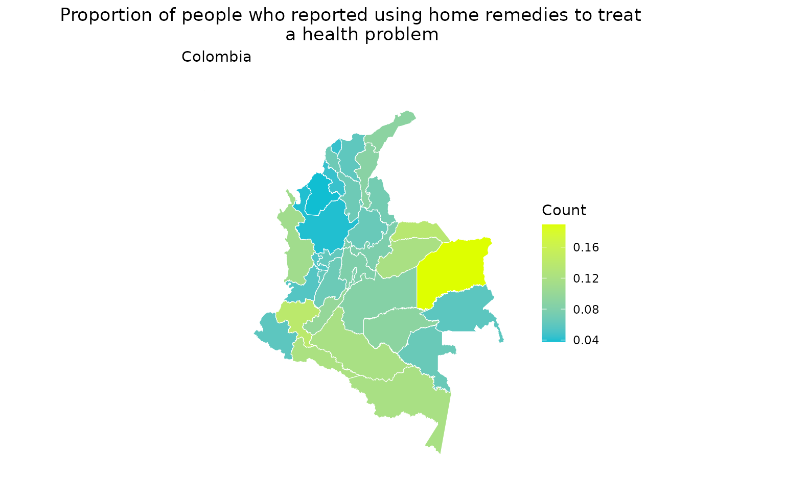

Integration of Geospatial and Demographic data
Source:vignettes/merge_geo_demographic.Rmd
merge_geo_demographic.RmdAs you know, ColOpenData can be used to access both
geospatial
and demographic
data from Colombia, in independent modules. However, we thought it would
be helpful to present a module that incorporates a way to merge
information between geospatial and demographic data. In this vignette
you will learn how to use the function
merge_geo_demographic().
Disclaimer: all data is loaded to the environment in the user’s R session, but is not downloaded to user’s computer.
How to merge geospatial and demographic data
Documentation access
Geospatial and demographic data can be merged based on the spatial aggregation level (SAL). While geospatial data can be aggregated down to the block level, demographic data is typically available only at the department and municipality levels. Therefore, these are the only SAL that can be accessed in both types of data for merging.
Now, the merge_geo_demographic() function takes as a
parameter the demographic dataset of interest. Therefore, we should
first access the demographic documentation to know which dataset we want
to work with. Let’s suppose we want to select a dataset at the
department level. We can load all demographic available datasets and
then filter the level by the desired SAL.
datasets_dem <- list_datasets("demographic", "EN")
department_datasets <- datasets_dem[datasets_dem["level"] == "department", ]
head(department_datasets)
#> # A tibble: 6 × 7
#> name group source year level category description
#> <chr> <chr> <chr> <chr> <chr> <chr> <chr>
#> 1 DANE_CNPVH_2018_1HD demographic DANE 2018 department househol… Number of …
#> 2 DANE_CNPVH_2018_2HD demographic DANE 2018 department househol… Number of …
#> 3 DANE_CNPVH_2018_3HD demographic DANE 2018 department househol… Households…
#> 4 DANE_CNPVPD_2018_1PD demographic DANE 2018 department persons_… Total cens…
#> 5 DANE_CNPVPD_2018_3PD demographic DANE 2018 department persons_… Total cens…
#> 6 DANE_CNPVPD_2018_4PD demographic DANE 2018 department persons_… Census pop…After reviewing the available datasets, we can select the one we wish to work with and take a closer look. For instance, let’s suppose we choose the dataset “DANE_CNPVPD_2018_14BPD”.
chosen_dataset <- download_demographic("DANE_CNPVPD_2018_14BPD")
#> Original data is retrieved from the National Administrative Department
#> of Statistics (Departamento Administrativo Nacional de Estadística -
#> DANE).
#> Reformatted by package authors.
#> Stored by Universidad de Los Andes under the Epiverse TRACE iniative.
head(chosen_dataset)
#> codigo_departamento departamento sexo grupo_de_edad area
#> 1 total Nacional total total total
#> 2 total Nacional total total total
#> 3 total Nacional total total total
#> 4 total Nacional total total total
#> 5 total Nacional total total total
#> 6 total Nacional total total total
#> servicio_salud_al_que_acudieron total
#> 1 total_personas_que_tuvieron_alguna_enfermedad 4528062
#> 2 sin_informacion 7942
#> 3 a_la_entidad_de_seguridad_social_en_salud_a_la_cual_esta_afliado_a 3383667
#> 4 a_un_medico_particular 316709
#> 5 a_un_boticario_farmaceuta_droguista 165061
#> 6 a_terapias_alternativas 8791chosen_data presents information regarding health
service attended by people that in the last thirty days had an illness,
accident, dental problem or other health problem. Now, we can use the
merge_geo_demographic() function.
The simplified argument downloads a simplified version
of the geometries. This is not recommended for very accurate
applications, but for a simple plot the approximation is enough. Also,
it makes the download process much faster. To override this, you could
use simplified = FALSE.
merged_data <- merge_geo_demographic(
demographic_dataset =
"DANE_CNPVPD_2018_14BPD"
)
#> Original data is retrieved from the National Administrative Department
#> of Statistics (Departamento Administrativo Nacional de Estadística -
#> DANE).
#> Reformatted by package authors.
#> Stored by Universidad de Los Andes under the Epiverse TRACE iniative.
head(merged_data)
#> Simple feature collection with 6 features and 17 fields
#> Geometry type: MULTIPOLYGON
#> Dimension: XY
#> Bounding box: xmin: -77.12783 ymin: 3.730633 xmax: -71.94885 ymax: 11.10537
#> Geodetic CRS: WGS 84
#> codigo_departamento departamento version area latitud longitud
#> 1 05 Antioquia 2018 62804708983 6.922796 -75.56499
#> 2 08 Atlántico 2018 3315752105 10.677010 -74.96522
#> 3 11 Bogotá, D.C. 2018 1622852605 4.316108 -74.18107
#> 4 13 Bolívar 2018 26719196397 8.745271 -74.50864
#> 5 15 Boyacá 2018 23138048132 5.776607 -73.10207
#> 6 17 Caldas 2018 7425221672 5.342066 -75.30688
#> total_personas_que_tuvieron_alguna_enfermedad sin_informacion
#> 1 607587 386
#> 2 136114 61
#> 3 821237 367
#> 4 141100 70
#> 5 127593 41
#> 6 108484 35
#> a_la_entidad_de_seguridad_social_en_salud_a_la_cual_esta_afliado_a
#> 1 481028
#> 2 99448
#> 3 606769
#> 4 97660
#> 5 98319
#> 6 86471
#> a_un_medico_particular a_un_boticario_farmaceuta_droguista
#> 1 47391 18035
#> 2 9862 2954
#> 3 74809 25556
#> 4 9693 3638
#> 5 9122 4153
#> 6 6388 3338
#> a_terapias_alternativas acudio_a_una_autoridad_indigena_espiritual
#> 1 937 107
#> 2 187 10
#> 3 2194 130
#> 4 227 25
#> 5 276 15
#> 6 132 83
#> otro_medico_de_un_grupo_etnico uso_remedios_caseros se_autorreceto
#> 1 318 24227 19728
#> 2 22 6011 14288
#> 3 351 65359 23385
#> 4 64 9650 15396
#> 5 61 10023 2503
#> 6 112 6743 2784
#> no_hizo_nada geom
#> 1 15430 MULTIPOLYGON (((-74.83058 8...
#> 2 3271 MULTIPOLYGON (((-74.91077 1...
#> 3 22317 MULTIPOLYGON (((-74.15067 4...
#> 4 4677 MULTIPOLYGON (((-76.17318 9...
#> 5 3080 MULTIPOLYGON (((-72.04767 7...
#> 6 2398 MULTIPOLYGON (((-74.66496 5...merged_data presents geospatial information related to
departments, as well as the information related to the health service
attended by the population. We can use this dataset to visualize the
proportion of people in each department who used home remedies for
health issues. To achieve this, we will calculate the proportion by
dividing the count of people who reported using home remedies
(“uso_remedios_caseros”) by the total count of people who reported
experiencing a health problem in each department.
merged_data <- merged_data %>%
mutate(proportion_home_remedies = uso_remedios_caseros /
total_personas_que_tuvieron_alguna_enfermedad)We can now plot the results
ggplot(data = merged_data) +
geom_sf(mapping = aes(fill = proportion_home_remedies), color = "white") +
theme_minimal() +
theme(
plot.background = element_rect(fill = "white", colour = "white"),
panel.background = element_rect(fill = "white", colour = "white"),
panel.grid = element_blank(),
axis.text = element_blank(),
axis.ticks = element_blank(),
plot.title = element_text(hjust = 0.5)
) +
scale_fill_gradient("Count", low = "#10bed2", high = "#deff00") +
ggtitle(
label = "Proportion of people who reported using home remedies to treat
a health problem",
subtitle = "Colombia"
)